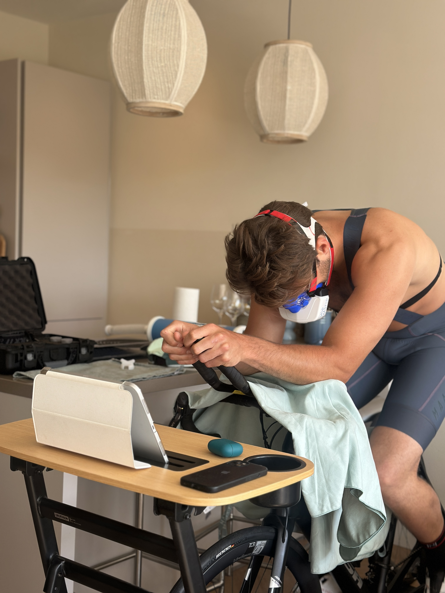
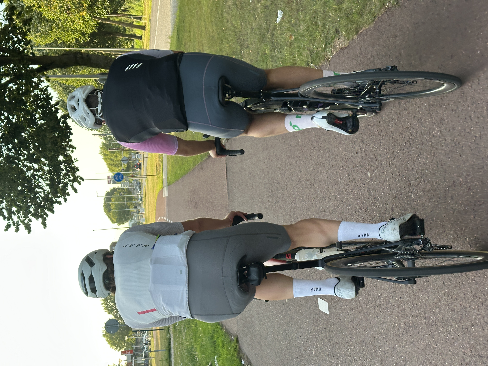

Voor fietsers, hardlopers en triatleten die gerichter willen trainen
Herkenbare Doelen
Waar wil jij beter in worden?
Veel sporters zoeken geen theorie, maar antwoord op een concrete trainingsvraag. Dit zijn situaties waarin een test direct waarde geeft.
10 km sneller lopen
Ontdek welke pace je echt kunt volhouden en hoe je je intervallen slimmer doseert.
Slimmer doseren in triathlon
Krijg grip op fiets- en loopintensiteit zonder later in training of race de rekening te betalen.
Gerichter trainen voor je voorjaarsdoel
Structureer je trainingen richting een concreet doel zoals de Amstel Gold of Utrecht Marathon.
Onze Methode
3 stappen van meting naar trainingsactie
Praktijkgericht meten, helder rapporteren en vertalen naar sessies die passen bij jouw sport en doel.
Op de fiets of hardlopend buiten
Wij meten met ademgasanalyse, hartslag en sport-specifieke data zoals wattage of pace, in een setting die past bij jouw sport.

Concreet rapport in duidelijke taal
Je ontvangt zones en drempels, vertaald naar pace, watt en hartslag, zodat je direct begrijpt wat je uitslag betekent.
Direct toepasbaar in training
In het nagesprek vertalen we je uitslag naar sessies, intervallen en intensiteiten voor jouw week, horloge of fietscomputer.

Populaire Testen
Check hier onze inspanningstesten
Ben je geinteresseerd? Kijk hier voor al onze testen.
Social Proof
Wat atleten zeggen
Na de test heb ik mijn duurblokken 20 watt lager gezet. Minder moe, meer constante progressie in 6 weken.
Rik, amateur wielrennerEindelijk duidelijkheid over mijn VT1 en VT2. Het rapport is helder en direct toepasbaar met mijn coach.
Sanne, triatleetDe submaximale optie gaf vertrouwen tijdens herstel. Ik kon veilig testen zonder over de grens te gaan.
Maarten, duursporter in revalidatie
Locaties
Het Marnix, Sportpark Schinkel of aan huis
Kies de setting die past bij jouw sport en planning. Alle locaties leveren dezelfde meetkwaliteit.
Amsterdam - Het Marnix
Marnixplein 1, 1015 ZN Amsterdam. Centraal bereikbaar en ingericht voor betrouwbare inspanningstesten.
Professionele testomgeving met volledige apparatuur en directe nabespreking op locatie.
Sportpark Schinkel
IJsbaanpad 50, 1076 CV Amsterdam. Praktijkgerichte buitenlocatie voor hardlooptesten en pace-analyse.
Ideaal voor hardlopers die getest willen worden in een setting die dichter op training en wedstrijd zit.
Aan huis
Liever in je eigen setting testen? We nemen meetapparatuur mee en doen de test op je eigen fiets en opstelling.
Wij nemen meetapparatuur mee en doen de test op je eigen fietsopstelling, maar aan huis de ademgasanalyse, mits in bezit van fietstrainer met Bluetooth en wattagemeter.
- Ideaal bij druk schema of hersteltraject
- Inclusief dezelfde rapportage + nagesprek
- Beschikbaar in heel Amsterdam
Train beter, efficienter, gerichter met jouw eigen data. Maak dit jaar jouw fietsjaar.